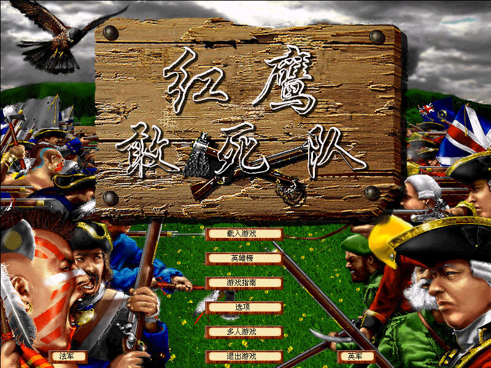
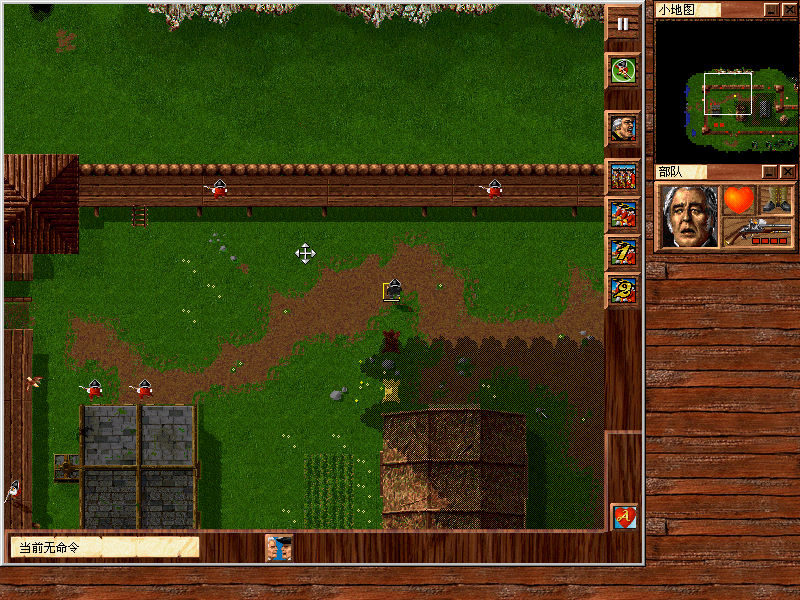

名稱：紅鷹敢死隊 (Fields of Fire: War Along the Mohawk，簡中／英文版)
簡介：Edward Grabowski 1998年出品的即時戰術遊戲，由Empire代理發行。2000年由育碧簡
中化並代理發行 [待補]。


保護：光碟
備註：XP以上系統執行時，需設定FOF16.EXE與FOF.EXE為Win9x相容。
備註：簡中版因漢化的相容性問題，只能在Win9x系統上執行。
備註：簡中版必須在簡中系統上執行，否則部份文字會無法顯示。
檔案：xp-fix.rar = 英文版XP修正檔
chs.rar = 簡中漢化檔（已免光碟）